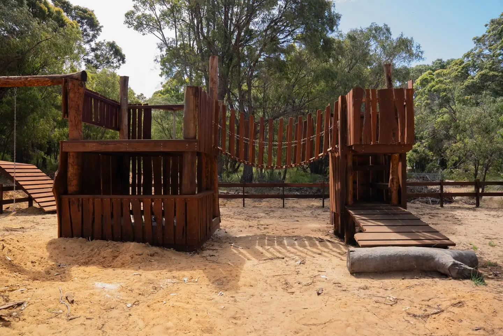

The bush playground
Forts, a rope bridge and a sandpit, built from Jarrah boards with Wandoo posts and live-edge cladding.

“Easily one of the most enjoyable projects I've worked on, this playground was built with Jarrah boards and Wandoo (whitegum) for all the posts and live edge cladding. It was fun pretending to be a kid again trying to imagine how the playground will flow and creating it.”Daniel Weston, on Instagram
The story
No kit, no plastic. This playground was designed around how kids actually move: up the ramp, across the swinging bridge, down into the sandpit, out to the swings, and round again.
Wandoo, a tough local whitegum, carries all the posts and the live-edge cladding, so the forts look like they grew out of the bush around them. Jarrah does the decking, rails and the fenced yard with its own little gate.
- Species
- Timber
- Jarrah boards, Wandoo posts and live-edge cladding
- Scope
- Two forts, swinging bridge, sandpit, swing frame, ramps, post and rail fence with gate
- Where
- Margaret River region, WA
Part 1 of 2
Forts and bridge
Part 2 of 2
Fence and gate
A Jarrah post and rail fence keeps the yard together, with a gate sized for small hands.
Your turn
Want something like this at your place?
Tell Daniel what you're picturing. It takes a minute, and he'll call you back to talk it through.
Keep reading